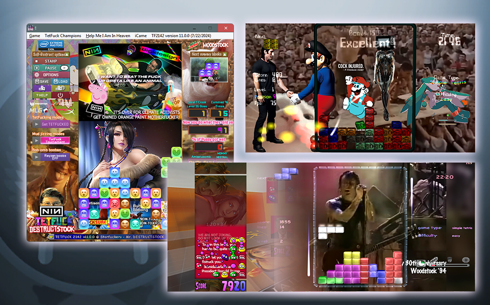
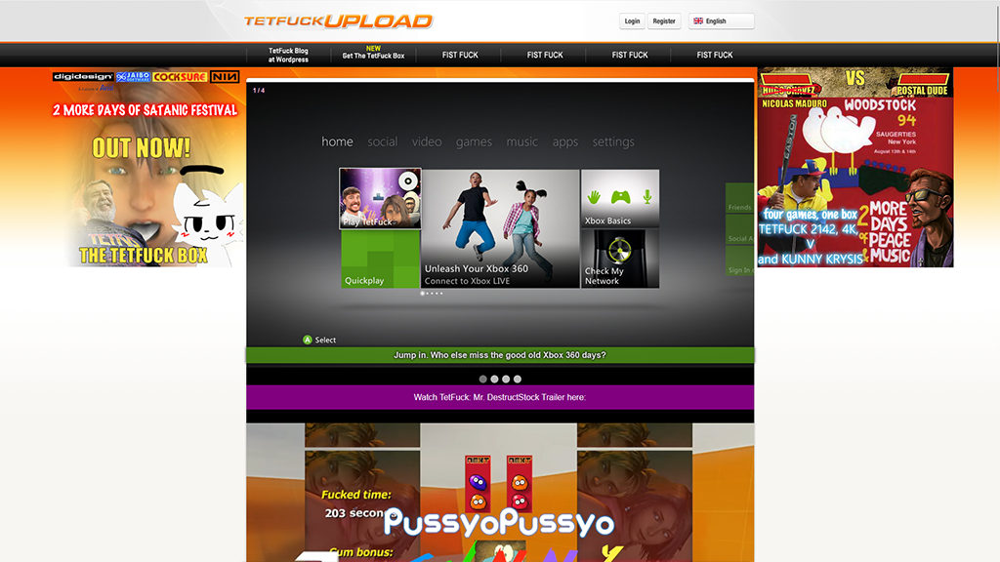

About
last updated: 8/17/2024
About TetFuck, and the original Tetris®
What is Tetris®?
It’s the same, but addictive puzzle game that started it all!
By embracing our universal desire to create order out of chaos, the Tetris® game provides intellectual sport that combines continuous fun with mental stimulation. As one of the most recognizable and influential video game brands in the world, it’s no wonder why there are hundreds of millions of Tetris products being played, worn, and enjoyed by fans in their everyday lives. For almost forty years, the game and brand have truly transcended the barriers of culture and language, resulting in a fun and exciting playing experience for everyone, everywhere!
Bu- But what about TetFuck?
Well, the goal of TetFuck, is just to make fun of Tetris®, and the TetFun 2000 (the game that started all of this mod). TetFuck 2142 (and all of it’s upcoming sequel) retains the core mechanics of Tetris but injects a burst of energy and loads of cum with its funky soundtrack and vibrant, memes, sexy girls, disco-inspired, Broken visuals. The falling blocks sway to the beat, making each move feel like a dance move in a retro club. The traditional Russian folk tune that accompanied Tetris has been replaced with an infectious funkadelic, Nine Inch Nails amazing ear blasting soundtrack that elevates the gaming experience to new heights.
Oh and we just recently unveiled The TetFuck Box, a collection that includes: TetFuck 2142, TetFuck 4K, and TetFuck V. Aswell as a new game called Kunny Krysis.
How do you play?
The Tetris® game requires players to strategically rotate, move, and drop a procession of Tetriminos that fall into the rectangular Matrix at increasing speeds. Players attempt to clear as many lines as possible by completing horizontal rows of blocks without empty space, but if the Tetriminos surpass the Skyline the game is over! It might sound simple, but strategy and speed can go a long way! Are YOU up for the challenge? With TetFuck, as we said before, it’s basically just Tetris but with all the stuff above, so the game should play exactly the same as before, super easy. You can adjust the keys sensitivity on the settings. TetFuck also support various controller through the use of Gopher360 (FREE, bundled with TetFuck), or reWASD (paid, with the TetFuck profile), both of these are located in TetFuck folder, example: C:\program files\tetfuck\Gopher360 or C:\program files\tetfuck\ReWASD config, with install/run instructions there.
How do you beat Pussyo Pussyo: Kunny Krysis?
The objective of Pussyo Pussyo is to clear your board of Pussyos before your opponent does. Pussyos are colored blobs that fall from the top of the screen and can be connected to each other in horizontal or vertical lines. When a line of four or more Pussyos is connected, it is cleared from the board and the player scores points. The game is played on a 10x10 grid. Pussyos fall from the top of the screen and land on the grid. Players can rotate and move Pussyos to create matches of four or more. When a match is made, the Pussyos are cleared from the board and the player scores points. The game ends when one player clears all of the Pussyos from their board. The player with the most points wins, and the loser would have to FISTFUCK somebody and get pregnant.
Who Created Tetris®?
In 1984, Tetris® was born from the imagination of computer programmer Alexey Pajitnov. Inspired by his favorite puzzle board game, Pentominos, Pajitnov created an electronic game that let players arrange puzzle pieces in real time as they fell from the top of the playing field. The resulting design was a game that used seven distinctive geometric playing pieces, each made up of four squares. Pajitnov called this game “Tetris,” a combination of “tetra” (the Greek word meaning “four”) and “tennis” (his favorite sport).
Who the fucking nigger made TetFuck?
In 2024, 40 years after the original Tetris® was born, a anonymous couple have sex together and that guy cummed into a HDD/SSD that contains TetFun 2000. Both his wife and his fucking motherboard got pregnant, but we don’t talk about the former, that motherboard suddenly stops working, so instead of buying a new PC, he decided to sent that motherboard to a guy who only known as “leonidakarlach”, our current CEO of TetFuck Company, along with his fucking entire PC including semen filled HDD, we put his HDD in and we found out that his copy of TetFun 2000 suddenly turning into TetFuck 2142 after we trying to relaunch it, so now we start building and adding more awesome Nine Inch Nails, Metallica, various other musicians, Skibidi Toilet Heat, “Minecraft R34”, Furry have sex on Car, and much more…
Our game design of TetFuck is very genius, by the way, and it is more innovative than what Apple’s Tim Cock does with Apple products, or other TetFuck competitors.
“TetFuck is a brilliant parody that pays homage to the classic Tetris while infusing it with a healthy dose of humor, drugs, lust and grooviness. Its genius design choices, from the visually captivating aesthetics to the dynamic difficulty adjustments, make it a standout title in the world of video game parodies. So, if you’re ready to experience Tetris like never before – with a funky twist and a dancefloor vibe – TetFuck is the game to play. Get ready to drop those Tetriminos and dance your way to victory in this disco-infused puzzle extravaganza!”
~ SWG Cool Articles
The Tetris® and the TetFucking Effect
The Tetris® Effect is a catchy term that players use to describe the way they are inspired by the game and see Tetriminos in everyday situations. Because Tetris, like the real world, challenges players to make order out of chaos using a specific organization system, the game components translate easily into lifestyle interpretations. Whether you’re packing the trunk of your car, loading a dishwasher, or organizing your shelves, you’re likely thinking about how each object will fit together strategically with minimal empty space. This is the Tetris Effect! The Tetris® brand is one of the leading and most distinctive video game brands and franchises in the world. Celebrating its 40th Anniversary in 2024, the brand continues to be loved globally by people of all ages and all cultures. Billions of Tetris games are played online every year, and over 520 million units have been sold worldwide. The Tetris brand’s global licensee network includes major video game publishers, including Nintendo and Sega, as well as many partners in electronics, toys and games, apparel, accessories, entertainment and more. Tetris Holding, LLC, is the owner of Tetris rights worldwide, and The Tetris Company, Inc. is its exclusive licensee.
TetFuck Upload (IT'S NOT MEGAUPLOAD! FBI PLEASE DON'T FIST FUCK OUR VIDEO GAME.)

TetFuck Upload is a website, which, mimics the look of the infamous Megaupload website which was shutdown in 2012 by the FBI. TetFuck Upload is a place where you will download the latest, newest release of TetFuck. Premium Download is for rich motherfuckers who have paid for our services, while Regular Download is for poor people or archivists. For the latest information about the Tetris brand and Tetris products, or if you want the actual Tetris® game, not a bootleg or parody of it, please visit www.tetris.com. And let’s hope that they don’t do legal shit that would kill TetFuck completely since this is a parody.
Legal disclaimer:
This page (and the game) is created for comedic purposes,
thus it’s under fair use, please don’t take it seriously.
This is NOT an official Tetris(R) product. Tetris ® & © 1985~2024 Tetris Holding. TetFun 2000 © Jaibo Software.
Special Thanks to Vinesauce, SWG, zippy, tijon, Nine Inch Nails and many others.